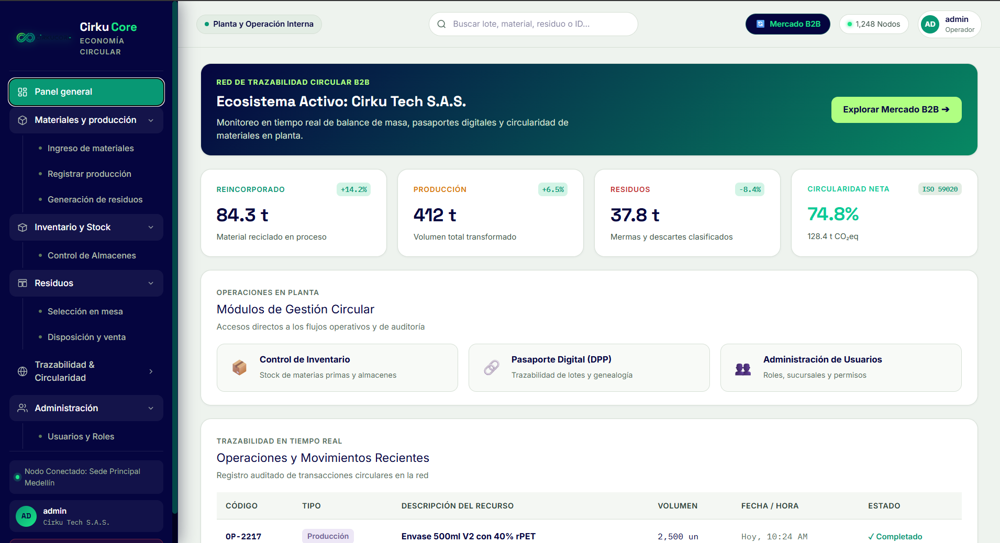

Sistema de Analítica para la Circularidad
Plataforma de información y analítica orientada a la trazabilidad del ciclo de vida de los materiales, monitoreo de flujos y valorización de residuos empresariales.
Problema:
Falta de trazabilidad y control sobre el ciclo de vida de los materiales, los manifiestos de residuos y el cumplimiento de metas de reducción y reutilización. A esto se suma la limitada capacidad para identificar las causas y áreas responsables de una mayor generación de residuos, dificultando la implementación de acciones de mejora efectivas.
Solución:
Desarrollo de una arquitectura de datos que permite registrar y relacionar las entradas de materias primas, los productos generados, las salidas y el aprovechamiento de residuos, facilitando la trazabilidad del ciclo de vida de los materiales y el seguimiento de indicadores como tasas de valorización y aprovechamiento.
Impacto:
Trazabilidad integral y control operativo, permitiendo auditar el flujo de materiales, identificar focos críticos de generación de residuos y fundamentar decisiones estratégicas de circularidad con datos verificables.
Go
PostgreSQL
Angular
Docker